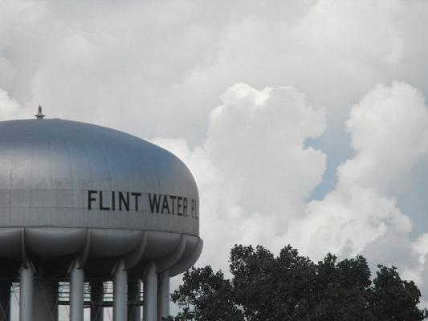

Environmental justice and democracy failures at the heart of Flint's water crisis
By jesse.worker - May 10th, 2016

by Jesse Worker and Elizabeth Moses - May 10, 2016
(Water plant in Flint, Mich. Photo by Ben Gordon/Flickr)
This blog has been crossposted from WRI Insights
The lead crisis affecting Flint, Michigan’s drinking water has been the cause of outrage and concern in the United States since it made national headlines in October. It’s raised the issue of the widespread risk of aging drinking water infrastructure, and brought to light the way regulatory agencies dismissed complaints from citizens. Recently, the Flint Water Advisory Task Force—a panel of five public health and policy experts—released a report with 44 recommendations to remedy the failures that exposed a low-income U.S. city of 100,000 to lead poisoning for at least 18 months. The message was clear: Governance failures were at the heart of the water crisis.
The Underlying Causes of Flint’s Water Crisis
Laws and institutions that promote transparent, inclusive and accountable water quality regulation and public service delivery are widely acknowledged as essential to effective governance. Generally these include environmental democracy laws that support the public’s ability to access government-held information, to participate in policymaking and to seek justice for grievances.
However, inequities and injustices arise when these rights are available for some and not others. While the Task Force’s report places the greatest share of responsibility for the Flint water crisis with the state, it highlights governance failures at all levels, including:
-
Lack of government accountability to Flint residents: From 2011-2015, an emergency manager appointed by the governor made Flint’s municipal decisions—including the decision to switch to the Flint River for drinking water. Flint’s mayor and city council had no decision-making power, forcing residents to raise concerns directly with state and federal agencies, who were not directly accountable to residents. And in most cases, they were dismissive of residents’ concerns.
-
Failure to comply with the law: With support and approval of the Michigan Department of Environmental Quality (MDEQ), the Flint water treatment plant chose not to use anti-corrosion control treatment, despite being required to by the federal Lead and Copper Rule (LCR). State and local officials also did not conduct adequate lead testing as required by the law—which skewed results and delayed action. At the federal level, the report criticizes the Environmental Protection Agency (EPA) for failing to enforce compliance by state regulators in a timely fashion.
-
Insufficient regulatory protections: The Flint crisis underscored the need for EPA to move forward with its process of revising the Lead and Copper Rule to ensure compliance and address inequities in implementation that allow for environmental injustices like those in Flint to occur. Last week, the EPA issued a public statement on how it plans to address these issues while creating more transparency and accountability.
-
Unwillingness to make critical information public: The MDEQ and the Michigan Department of Health and Human Services produced flawed sampling data; did not convey accurate information to the Governor’s office, the EPA or to the public; and failed to respond appropriately to information provided by medical and environmental health professionals.
Flint Is Not Alone
These sorts of governance failures are a global problem, especially for groups or communities that are politically or economically disempowered.
For example, WRI and its partners in Indonesia, Mongolia and Thailand have worked with communities dealing with water pollution. Villages along the Ciujung River in Indonesia, the Tuul River in Mongolia and the Map Ta Phut Industrial Estate in Thailand are all witnessing significant deterioration of the water they use for washing, bathing, fishing and other livelihood activities. Residents suspect these problems might be connected to industrial discharges, spurred by poor compliance and minimal enforcement of water quality and public health laws, as well as a lack of public participation in decision-making processes.
In fact, we’ve found that these communities in Asia suffer many of the same issues found in Flint, including that:
-
Government officials are not disclosing or disseminating timely, relevant and accurate information to communities so they can understand and address their environmental and public health concerns. In all three countries, for example, formal community requests to the government for pollution information failed to provide residents with the facility-specific compliance and enforcement reports they sought.
-
Community members have significant challenges engaging government officials over their concerns. In Mongolia, villagers don’t remember ever being consulted during the environmental impact assessment process required when new mines were proposed in their community.
-
It often takes protests and the involvement of outside advocacy groups and media to hold government officials accountable, monitor environmental management goals, and shape policies and practices to protect public health.
-
Despite having some water protection and public health laws on the books, it’s clear that local governments aren’t actually enforcing these laws. Poor compliance of water discharge permits is a significant issue in Indonesia, for example.
A Need for Better Transparency and Accountability
Government agencies, even in wealthy countries, sometimes lack the incentives, capacity or leadership to fulfill their mandate of protecting public health and the environment. It is at these times that environmental democracy is so important. The public must be able to access accurate public health information, have their voices heard by responsible parties and seek accountability.
Flint residents sounded the alarm almost immediately. If they had been taken seriously and the right governance structures were in place, the crisis could have been minimized or averted. Let’s not let this same situation play out in other communities around the world.